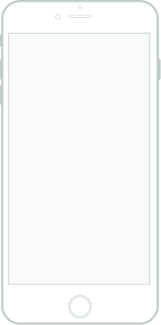

Exercice : Vidéos++
Comment optimiser vos campagnes emailing et SMS
Confiez vos campagnes emailing et SMS à nos équipes !
Nous saurons vous accompagner pour :
- Définir les meilleures options d’envoi (quels emails utiliser à quel moment, connaître les détails de tous les envois ainsi que les objets des messages déjà transmis, etc.)
- Définir et valider vos objectifs
- Valider le meilleur template (visuel et contenu du mail) en fonction de vos campagnes emailing et SMS précises
- Procéder à des tests auprès de vos clients
- Envoyer vos emails et SMS à vos prospects et clients
- Suivre et analyser les résultats de vos campagnes emailing et SMS
Et si vous souhaitez envoyer vous-même vos mails ou lancer votre propre campagne SMS pro, on vous fournit les outils nécessaires (template mail, logiciel immobilier, application Linkellis) pour vos campagnes emailing et SMS. Des outils à utiliser en fonction de vos cibles et de vos besoins !
